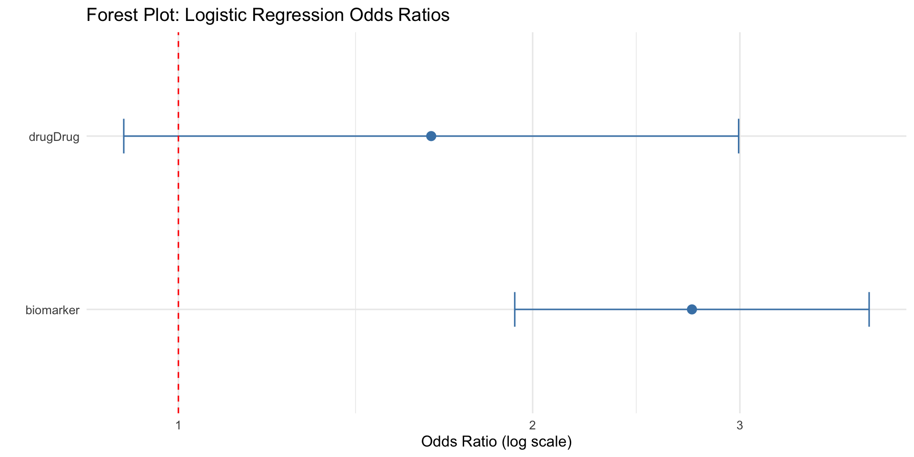

mu <- 140
sd <- 10
x <- seq(mu - 4*sd, mu + 4*sd, length.out = 400)
df_norm <- tibble(
x = x,
density = dnorm(x, mean = mu, sd = sd)
)
ggplot(df_norm, aes(x = x, y = density)) +
geom_line(linewidth = 1) +
geom_vline(xintercept = mu, linetype = "dashed") +
labs(
x = "Outcome value (e.g., SBP mmHg)",
y = "Density",
title = "Normal distribution: variability around an expected mean"
)Practical Regression Implementations: linear regression and logistic regression
Lesley Chapman Hannah, Ph.D., M.S.
College of Graduate Studies
Northeast Ohio Medical University
Overview
In the next series of lectures, each regression model will be used to model a specific kind of biomedical outcome
Linear regression models a continuous outcome
Example outcomes: gene expression (normalized), lab values (e.g., CRP), tumor size/volume, biomarker concentrationsLogistic regression models a binary outcome
Example outcomes: responder vs non-responder, adverse event yes/no, mutation present vs absent, relapse yes/no
Overview
For each model implementation, we will:
- describe the model formula
- state the likelihood
- fit the model using R
- interpret model output; i.e.: coefficients and uncertainty
Linear Regression - Reseach Question(s)
Does a drug lower systolic blood pressure (SBP) after adjusting for age?
Linear regression model statement
\[ Y_i = \beta_0 + \beta_1 \text{Drug}_i + \beta_2 \text{Age}_i + \varepsilon_i, \quad \varepsilon_i \sim N(0,\sigma^2) \]
Key parts:
- \(\beta_0\): expected SBP for a reference patient (control group, age = 0 baseline)
- \(\beta_x\): regression coefficients
- adjusted mean SBP difference (Drug vs Control), in mmHg
- \(\sigma^2\): error variance
- remaining variability not explained by treatment or age
- residual biological + measurement variability
- how spread out individual SBP values are around the regression line
Likelihood statement:
\[ Y_i \mid X_i \sim N(\mu_i,\sigma^2), \quad \mu_i = X_i\beta \]
- model predicts a mean systolic blood pressure (\(\mu_i\)) for each covariate
- standard errors and confidence intervals are derived from the Gaussian sampling distribution of \(Y_i\) around \(\mu_i = X_i\beta\) with variance \(\sigma^2\)
- determines the sampling distribution of the estimated regression coefficient \(\hat{\beta}\)
Gaussian likelihood for linear regression
Each patient’s SBP is modeled as a draw from a normal distribution centered around mean \(\mu\):
\[ Y_i \mid X_i \sim N(\mu_i, \sigma^2) \]

Gaussian likelihood for linear regression
Each patient’s SBP is modeled as a draw from a normal distribution centered around mean \(\mu\):
\[ Y_i \mid X_i \sim N(\mu_i, \sigma^2) \]
Interpretation:
- \(\mu_i\) is the model’s expected SBP for a given age and treatment
- \(\sigma\) controls how widely individual patients vary around that expected mean
Simulate systolic blood pressure data
Check features: systolic blood pressure by treatment
Fit linear regression
Call:
lm(formula = sbp ~ drug + age, data = dat_lm)
Residuals:
Min 1Q Median 3Q Max
-28.5048 -7.5282 -0.1266 7.2992 24.9569
Coefficients:
Estimate Std. Error t value Pr(>|t|)
(Intercept) 132.75008 3.84749 34.503 < 2e-16 ***
drugDrug -8.47599 1.70879 -4.960 1.81e-06 ***
age 0.43398 0.06523 6.653 4.52e-10 ***
---
Signif. codes: 0 '***' 0.001 '**' 0.01 '*' 0.05 '.' 0.1 ' ' 1
Residual standard error: 10.7 on 157 degrees of freedom
Multiple R-squared: 0.3061, Adjusted R-squared: 0.2973
F-statistic: 34.63 on 2 and 157 DF, p-value: 3.485e-13Linear regression: key results interpretation
- coefficients section of the model output helps answer the scientific question of interest
- other output elements are informative and encouraged for independent review
Coefficients table:
Estimate: best estimate of the effect size
- drugDrug: -8.5
- holding age constant, patients receiving Drug have an average SBP that is 8.5 mmHg lower than control patients
- age: 0.43
- mean SBP increase per additional year of age
- drugDrug: -8.5
Std. Error: uncertainty for each estimate** for
age: mean SBP change per yearPr(>|t|) (p-value): observed effect is unlikely due to random sampling alone
- both values are statistically significant
Linear regression 95% confidence intervals
2.5 % 97.5 %
(Intercept) 125.1505618 140.3495885
drugDrug -11.8511665 -5.1008164
age 0.3051412 0.5628096Interpretation:
- CI width reflects uncertainty driven by \(\sigma^2\) and sample size
- Intercept: [125.2 - 140.3]
- baseline SBP lies between 125 and 140 mmHg for the reference group
- drugDrug: [−11.9, −5.1]
- true average SBP reduction associated with Drug dose is between 5 and 12 mmHg
- age: [0.305, 0.562]
- each additional year of age is associated with an average SBP increase between 0.3 and ~0.6 mmHg
Logistic regression - Biomedical research question
Do patients experience improvement with drug treatment and is this improvement related to circulating biomarker levels [i.e.:C-reactive protein (CRP)]? [outcome: yes/no]
Logistic regression model statement
\[ Y_i \mid X_i \sim \text{Bernoulli}(p_i), \quad \text{logit}(p_i) = \eta_i = \beta_0 + \beta_1 \text{Drug}_i + \beta_2 \text{Biomarker}_i \]
Key parts:
outcome distribution: Bernoulli
- each subject’s outcome is binary [i.e.: Response = Yes/No]
- \(p_i\) : probability that subject i has outcome = 1
link function (logit)/Linear predictor: \(logit(p_i)=ηi\)
- connects predictors to the probability of response
Logistic regression model statement
\[ Y_i \mid X_i \sim \text{Bernoulli}(p_i), \quad \text{logit}(p_i) = \eta_i = \beta_0 + \beta_1 \text{Drug}_i + \beta_2 \text{Biomarker}_i \]
Additional note:
- regression does not require the observed outcome itself to be continuous
- logistic regression targets a continuous probability \(p_i∈(0,1)\) even though the observed data are binary
- observed outcome takes values like 0 and 1
- however, the regression model is not directly modeling that binary variable as a linear function of predictors
- logistic regression models the log odds of the outcome is 0 or 1
Bernoulli likelihood for logistic regression
Each patient’s binary response is modeled as a draw from a Bernoulli distribution with probability \(p_i\):
\[ Y_i \mid X_i \sim \text{Bernoulli}(p_i) \]
p <- 0.7
df_bern <- tibble(
outcome = factor(c("0 (No)", "1 (Yes)"), levels = c("0 (No)", "1 (Yes)")),
prob = c(1 - p, p)
)
ggplot(df_bern, aes(x = outcome, y = prob)) +
geom_col() +
scale_y_continuous(limits = c(0, 1)) +
labs(
x = "Binary outcome",
y = "Probability",
title = "Bernoulli distribution: probability of Yes vs No"
)
Interpretation:
- the model predicts \(p_i = P(Y_i=1\mid X_i)\)
- covariates change \(p_i\) through the logit link: \(\text{logit}(p_i)=X_i\beta\)
Likelihood (why it matters)
Bernoulli likelihood:
\[ P(Y_i \mid p_i) = p_i^{Y_i}(1-p_i)^{1-Y_i}, \quad p_i=\frac{1}{1+e^{-\eta_i}} \]
- The model predicts a probability, not a continuous mean outcome
- The natural biomedical summary is an odds ratio
Drug response dataset
n <- 220
dat_logit <- tibble(
drug = rbinom(n, 1, 0.5),
biomarker = rnorm(n, 0, 1)
)
b0 <- -0.8
b_drug <- 0.9
b_bio <- 1.1
eta <- b0 + b_drug * dat_logit$drug + b_bio * dat_logit$biomarker
p <- 1 / (1 + exp(-eta))
dat_logit <- dat_logit |>
mutate(
drug = factor(drug, labels = c("Control", "Drug")),
response = rbinom(n, 1, p) |> factor(labels = c("No", "Yes"))
)# A tibble: 6 × 3
drug biomarker response
<fct> <dbl> <fct>
1 Drug 0.0592 No
2 Drug -0.981 No
3 Control 0.355 Yes
4 Control -0.340 No
5 Drug -0.927 No
6 Drug 0.0958 No Fit logistic regression
fit_logit <- glm(response ~ drug + biomarker, data = dat_logit, family = binomial())
summary(fit_logit)
Call:
glm(formula = response ~ drug + biomarker, family = binomial(),
data = dat_logit)
Coefficients:
Estimate Std. Error z value Pr(>|z|)
(Intercept) -0.4925 0.2098 -2.347 0.0189 *
drugDrug 0.4947 0.3069 1.612 0.1070
biomarker 1.0048 0.1769 5.680 1.34e-08 ***
---
Signif. codes: 0 '***' 0.001 '**' 0.01 '*' 0.05 '.' 0.1 ' ' 1
(Dispersion parameter for binomial family taken to be 1)
Null deviance: 300.88 on 219 degrees of freedom
Residual deviance: 257.40 on 217 degrees of freedom
AIC: 263.4
Number of Fisher Scoring iterations: 4Logistic regression output interpretation
- logistic regression models the log-odds of response
- every coefficient describes how a predictor shifts the log-odds of the outcome
- logistic regression is fit on the log-odds scale:
\[ log(odds)=β_0 +β_1Drug+β_2Biomarker \]
Estimate
- estimated change in log-odds of response
Example:
- drugDrug: 0.4947
- drug increases the log-odds of response by 0.4947
- exp(0.4947) ≈ 1.64
- drug treatment increases the odds of response by approximately 64% compared to control
- biomarker effect: 1.0048
- biomarker increases the log-odds of response by 1.0048
- exp(1.0048) ≈ 2.73
- one-unit increase in biomarker is associated with nearly a 3-fold increase in odds of response, adjusting for treatment
Logistic regression output interpretation
- logistic regression models the log-odds of response
- every coefficient describes how a predictor shifts the log-odds of the outcome
- logistic regression is fit on the log-odds scale:
\[ log(odds)=β_0 +β_1Drug+β_2Biomarker \]
Std. Error
- uncertainty of the log-odds estimate
Pr(>|z|)
- evidence against the null hypothesis \(H_0:β=0\)
- drugDrug: 0.1070
- estimated effect is positive
- result not statistically significant
- p > 0.05 [traditional threshold for statistical significance]
- biomearker: 1.34e-08
- biomarker level shows a statistically significant association with response (p < 10⁻⁷)
Forest plot: logistic regression odds ratios
- forest plot summarizes effect sizes on an odds-ratio scale
b <- coef(fit_logit)
se <- sqrt(diag(vcov(fit_logit)))
or_tab <- tibble(
term = names(b),
OR = exp(b),
CI_low = exp(b - 1.96 * se),
CI_high = exp(b + 1.96 * se)
)
or_tab# A tibble: 3 × 4
term OR CI_low CI_high
<chr> <dbl> <dbl> <dbl>
1 (Intercept) 0.611 0.405 0.922
2 drugDrug 1.64 0.899 2.99
3 biomarker 2.73 1.93 3.86 Forest plot: logistic regression odds ratios
A forest plot summarizes effect sizes on an odds-ratio scale
- odds ratios [points] with 95% confidence intervals [horizontal lines]

Forest plot: logistic regression odds ratios
A forest plot summarizes effect sizes on an odds-ratio scale
Interpretation:
- points to the right of 1 increase odds of response [left of 1 decrease odds]
- drugDrug: CI crosses 1 additional indicator that there’s no significant change in odds
- wider CI: more uncertainty in that coefficient estimate
- biomarker: narrow CI indicating increased certainty in response